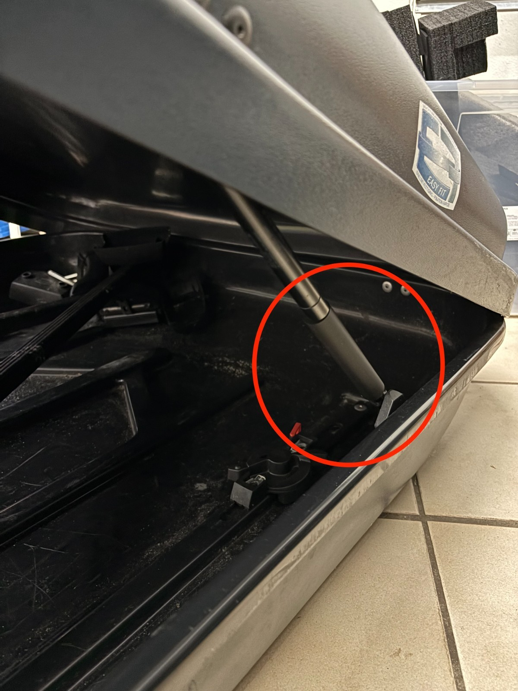
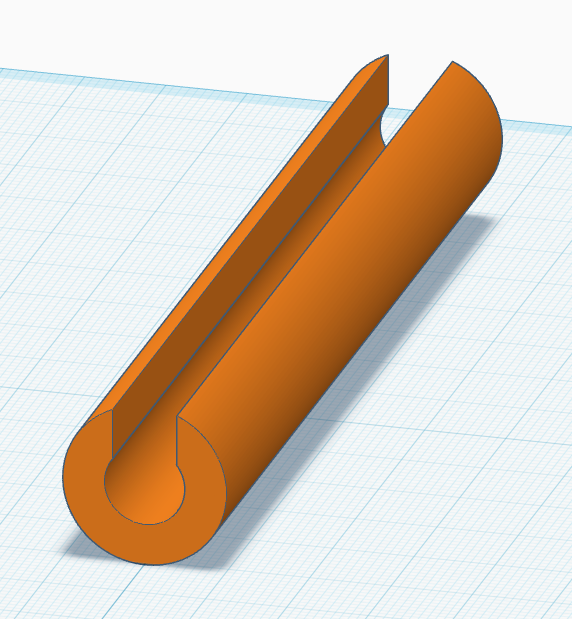
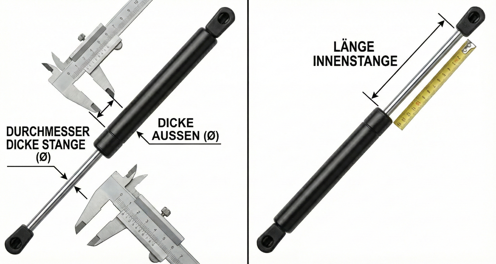

* Abbildung ähnlich. Das Bild dient als Anwendungsbeispiel.


Dachbox-Feder-Blocker (Universal)
Ihre Jetbag Dachbox (Modell Family) bleibt nicht mehr zuverlässig offen? Anstatt die teuren Original-Gasfedern (ca. 80N) für viel Geld auszutauschen, ist unser Blocker die ideale Lösung, wenn Sie die Box nur gelegentlich (z.B. 1-2 mal im Jahr für den Urlaub) nutzen. Da die Box in 99% der Zeit ohnehin geschlossen ist, reicht dieser mechanische Helfer völlig aus.
| Hersteller | Jetbag |
|---|---|
| Modell | Family |
| Anzahl Federn | 2 |
| Original-Kraft | ~80N |
| Kolbenstange (Rod) Ø | 8mm |
| Zylinder Ø | 18mm |
| Länge (ausgefahren) | 280mm |
| Blocker-Länge | ~100mm |
🧹 Schluss mit dem nervigen Besenstiel!
Verschwenden Sie keinen Platz mehr mit Holzlatten oder Besenstielen, die ständig im Weg umherrutschen.
✅ Meist günstiger
Deutlich preiswerter als neue Original-Federn. Ideal für Gelegenheitsnutzer, die ihre Box nur selten (z.B. 1-2 mal im Jahr) brauchen.
⚡ Sekundenschnell
Einfach in die ausgefahrene Feder einklemmen. Hält den Deckel sicher offen, solange Sie ein- oder ausladen.
🛡️ Sicher beladen
Kein Mausefallen-Effekt mehr. Schützt Finger und Kopf — besonders wichtig, wenn Kinder beim Beladen helfen.
❄️ Funktioniert bei Kälte
Anders als Gasfedern verliert der Blocker bei Minusgraden keine Kraft. Ideal für Wintersportler und Skiurlaub.
Warum der Feder-Blocker besser ist als Hausmittel
Viele Dachbox-Besitzer greifen zu improvisierten Lösungen. Hier sehen Sie, warum unser Blocker die bessere Wahl ist:
| Notlösung | Risiko / Nachteil | Vorteil Feder-Blocker |
|---|---|---|
| Besenstiel / Holzlatte | Instabil, rutscht weg, nimmt Stauraum weg | Fest fixiert, kein Platzverlust |
| Gripzange | Zerkratzt Kolbenstange, zerstört Dichtung | Glatte Kontaktflächen, schont die Feder |
| PVC-Rohr (DIY) | Muss passgenau geschnitten werden, unhandlich | Universell passend, sofort einsatzbereit |
| Wäscheklammern | Zu schwach, rutschen ab | Mechanisch stabil für alle Box-Gewichte |
Häufige Fragen zu schwachen Dachbox-Gasfedern
Wenn die Dachbox von alleine schließt, sind meist die Gasfedern (Gasdruckfedern) zu schwach geworden. Das Gas entweicht über die Jahre. Unser Feder-Blocker ist die ideale Lösung, wenn Sie die Box nur gelegentlich (z.B. einmal im Jahr für den Urlaub) nutzen und sich den teuren Austausch der Original-Federn sparen wollen.
Gasfedern sind Verschleißteile. Dichtungen altern und der Innendruck lässt nach. Besonders bei Kälte verlieren sie an Kraft, wodurch der Deckel nicht mehr oben bleibt. Ein mechanischer Blocker sichert den Deckel zuverlässig gegen Zuklappen.
Ein Besenstiel oder eine Holzlatte ist instabil, kann wegrutschen und nimmt wertvollen Stauraum in der Box weg. Unser Feder-Blocker wird fest an der Gasfeder fixiert, nimmt keinen Platz für Gepäck weg und ist sekundenschnell montiert.
Davon raten wir dringend ab! Eine Gripzange zerkratzt die Kolbenstange und zerstört damit die Dichtung der Gasfeder endgültig — es kommt zum Ölaustritt. Unser Blocker hat glatte Kontaktflächen, die die Oberfläche der Kolbenstange schonen.
Bei niedrigen Temperaturen verlieren Gasfedern stark an Kraft. Besonders Skifahrer und Wintersportler kennen das Problem: Der Deckel wird durch Schnee und Eis schwerer, während die Federn weniger Gegenkraft liefern. Ein mechanischer Blocker funktioniert temperaturunabhängig und sichert den Deckel auch bei Minusgraden.
Für ältere Dachboxen (z.B. Jetbag, alte Kamei oder Thule Modelle) sind Original-Ersatzteile oft nicht mehr lieferbar. Auch die Newton-Werte sind häufig unleserlich. Unser universeller Feder-Blocker funktioniert unabhängig von der Newton-Zahl und passt auf alle gängigen Gasfedern mit 6-8mm Kolbenstange.
Wir versenden kostenlos nach Luxemburg (1-2 Werktage), Deutschland (2-4 Werktage), Frankreich (3-5 Werktage) und Belgien (2-4 Werktage). Alle Bestellungen werden innerhalb von 24 Stunden versandfertig gemacht.